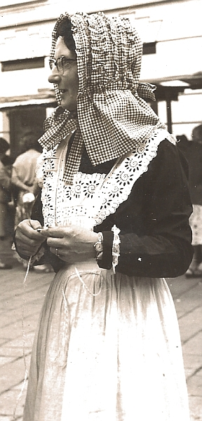

 Dans les bouons vièrs temps eune femme s'habilyait comme eune femme. Des bouons fort souliers en tchui auve des talons respectabl'yes et solides, et des cauches dé laine sus les pids. L'vêtement dé d'sous à femme, dé tchi qu'nou n'mentionne pon l'nom mais tch'a rempliaichi l'drapé qu'nou met ès êfants, est si p'tit qu'nou peut quâsi l'patchi p'tit assez pour lé mett' dans la pouchette dé veste!
La raîson qu'jé l'sai bein ouaithe que je n'sais pon mathié, est qu'nou-s-en vait tant sus la lîngne les jours dé lavage! L'temps pâssé, il 'taient faites dé bouon fort coton et d'valaient jusqu'au genou ou en d'souos et avaient d'la dentelle ou du brodage au bas! Les cotillons - les femmes en mettaient l'temps pâssé - et les robes traînaient qâsi à tèrre, et tchiquefais les cotillons avaient eune belle pétite dentelles au bas étout. Quand eune femme prannait eune pouangnie d' robe et d'cotillons au côté, a bein près à hauteu du genou, pour les l'ver jusqu'au d'sus d'la g'ville du pid pour l's empêchi d'traîner sus l'trottouaithe ou dans la route ou dans l'pité quand i' tchiyait d'la plyie, nou viyait d'la dentelle et du brodage. Man bouanhomme! V'là tchi faîsait un homme frémi! Et quand eune femme l'vait robe et cotillons quâsi jusqu'au g'nou pour monter dans la vainne ou dans l'quèrre, nou viyait tant d'dentelle qué ch'tait assez pour faithe un homme s'êvanni, sans pâler d'frémi, car nou peut dithe qué d'vant la mathier tout ch'qu'un homme viyait d'sa janne fille tchi n'tait pon couvèrt d'habits ou d'dentelle dans chu temps-là, 'tait sa fache et ses mains! A'ch'teu!!!! Nou vait tant d'gambes et d'genouors et d'dgéthets qu'nou n'y prend pas d'avis.
Dans chu temps-là, les femmes mettaient des cors, lachis raides en driéthe, pour sé rap'tichi la tâle. Ou pâlez dé p'tites tâles! Ch'tait bein aîsi pour un homme de mett' son bras l'tou d'la tâle dé sa janne fille à ch't'êpoque-là. Et pis les femmes fouôrraient eune baleine en d'vant et en d'dans du cor pour sé garder draites. Chutte baleine-là 'tait pliate et à bein pres un pouce trais-quarts dé laîze et dans les tchînze pouces dé long. J'né sai pon trop bein pour tchi qué ch'tait appelé eune baleine. I 'm'sembl'ye que Papa m'dît quand j'tais mousse, qué les preunmiéthes faites sèrvi en Jèrri 'taient des dents d'baleines rapportées par des naviguants au large, mais y'a si longtemps d'ch'la qu'ch'est p't-êt' tchiquechose que j'ai rêvé!!
Viyiz étout:
{kind=link}